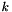
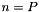
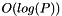
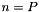
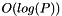
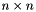
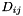
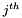
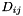
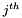

Introduction
The Muster library provides implementations of sequential and parallel K-Medoids clustering algorithms. It is intended as a general framework for parallel cluster analysis, particularly for performance data analysis on systems with very large numbers of processes.
The parallel implementations in the Muster are designed to perform well even in environments where the data to be clustered is entirely distributed. For example, many performance tools need to analyze one data element from each process in a system. To analyze this data efficiently, clustering algorithms that move as little data as possible are required. In Muster, we exploit sampled clustering algorithms to realize this efficiency.
The parallel algorithms in Muster are implemented using the Message Passing Interface (MPI), making them suitable for use on many of the world's largest supercomputers. They should, however, also run efficiently on your laptop.
Getting Started
Partitions
The algorithms in Muster are partitioning algorithms, that is, they divide a data set up into a set of groups, or clusters of data objects. Together, these groups are called a clustering or a partitioning of the data.
There are two classes that represent clusterings. These are as follows:
- partition
This class represents a partitioning of a data set. It stores the clusters in the data set along with representatives from each of the clusters. It also stores, for every object in the data set, the cluster to which that object has been assigned.
A partition is entirely local to the process that owns it. It exists in one memory space and contains data about all objects in the data set it describes.
- par_partition
- This class is similar to partition, but it is a distributed data structure. A par_partition object represents the results of parallel clustering algorithm. Instead of storing the cluster assignments of all objects in the data set, each par_partition object stores only the cluster membership for objects that are local to the calling process.
Note that par_partition does not inherit from partition, because the classes are structurally different. One is a local, centralized data structure, and its state represents all data in the set, while the other is a distributed structure, and represents only a part of the full data set.
If you need to, you can convert a par_partition to a partition with the par_partition::gather() method, but the two classes are not interchangeable.
Clustering Algorithms
Classes for clustering algorithms derive from either partition or par_partition. The algorithms themselves are methods on these derived classes, and they store their output in the class. This allows all (or at least most of) the state for the algorithms and their output to be encapsulated in a single class.
Algorithms themselves are template functions on the derived classes. You can thus call them on any type of object with any number of distance metrics. Because they are template functions, you don't need to explicitly indicate the types of the things you pass to the clustering algorithms; the types are inferred from the algorithms' parameters.
There are two classes you should be concerned with:
- kmedoids
This class inherits from partition and contains implementations of the PAM and CLARA sequential clustering algorithms (Kaufman and Rousseeuw, 1990). PAM is an , optimal K-medoids algorithm, and CLARA is an implementation that executes multiple trials of PAM. These algorithms are implemented in the pam() and clara() methods.
PAM and CLARA both require that the caller supply , the number of clusters, as a parameter to the algorithm. We have adopted a technique used by the X-Means (Pelleg and Moore, 2000) algorithm to choose an "ideal" from many clustering trials using the Bayesian Information Criterion (BIC). Instead of supplying a specific , the caller supplies a range of values for , and the algorithms use the BIC to select the best fit from the range.
The BIC variants are implemented in xpam() and xclara(). They will be slower than the fixed-k versions, as they can require many iterations of PAM or CLARA be tested to find the best .
- par_kmedoids
This class inherits from par_partition and it implements the CAPEK parallel clustering algorithm. Functionally, CAPEK is similar to CLARA, but it is distributed and runs in time for
 data objects and processes. If , that is, if there are only as many input data elements as processes, CAPEK runs in  time.
data objects and processes. If , that is, if there are only as many input data elements as processes, CAPEK runs in  time.The fixed-k version of CAPEK is implemented in capek(), and a variant using the BIC to select a best is in capek().
Dissimilarity Functions and Matrices
Most of the algorithms here require some sort of dissimilarity metric to run. As with the STL, you can use any callable object (function or functor) as a distance function. See the documentation for xcapek() for an example a dissimilarity functor.
The PAM algorithm, which is the basis for all the algorithms in this package, requires a precomputed dissimilarity matrix in order to run efficiently. Given a set of objects, a dissimilarity matrix is a triangular,  matrix  where each element  represents the distance between the and  objects in the data set. It takes time to compute a distance matrix like this.
where each element  represents the distance between the and  objects in the data set. It takes time to compute a distance matrix like this.
We use the boost::symmetric_matrix class to represent dissimilarity matrices. This class provides a packed representation of an upper-triangular matrix, making it an efficient way to store a dissimilarity matrix for clustering. For convenience, we have typedef'd boost::symmetric_matrix to cluster::dissimilarity_matrix. To construct a dissimilarity matrix, use cluster::build_dissimilarity_matrix() to do this.
PAM is the only algorithm the package that requires the use to pass in the matrix explicitly. This is for efficiency reasons. A user (or another algorithm) may want to call PAM many times using the same dissimilarity matrix, and with this design, the user can first build the matrix then call PAM without paying the (potentially very high) cost of building the matrix.
Author
Muster was implemented by Todd Gamblin at Lawrence Livermore National Laboratory.
Please send questions, bug reports, or suggestions to tgamblin@llnl.gov.
References
For more details on the algorithms implemented in Muster, You can consult the following sources:
-
For more on CAPEK:
Todd Gamblin, Bronis R. de Supinski, Martin Schulz, Rob Fowler, and Daniel A. Reed. Clustering Performance Data Efficiently at Massive Scales. Proceedings of the International Conference on Supercomputing (ICS'10), Tsukuba, Japan, June 1-4, 2010.
-
For more on X-Means and the Bayesian Information Criterion:
Dan Pelleg and Andrew Moore. X-Means: Extending K-Means with Efficient Estimation of the Number of Clusters. Proceedings of the Seventeenth International Conference on Machine Learning, San Francisco, CA. June 29-July 2, 2000. pp 727-734.
-
For more on PAM and CLARA:
Leonard Kaufman and Peter J. Rousseeuw. Finding Groups in Data: An Introduction to Cluster Analysis. John Wiley & Sons, Inc., New York.